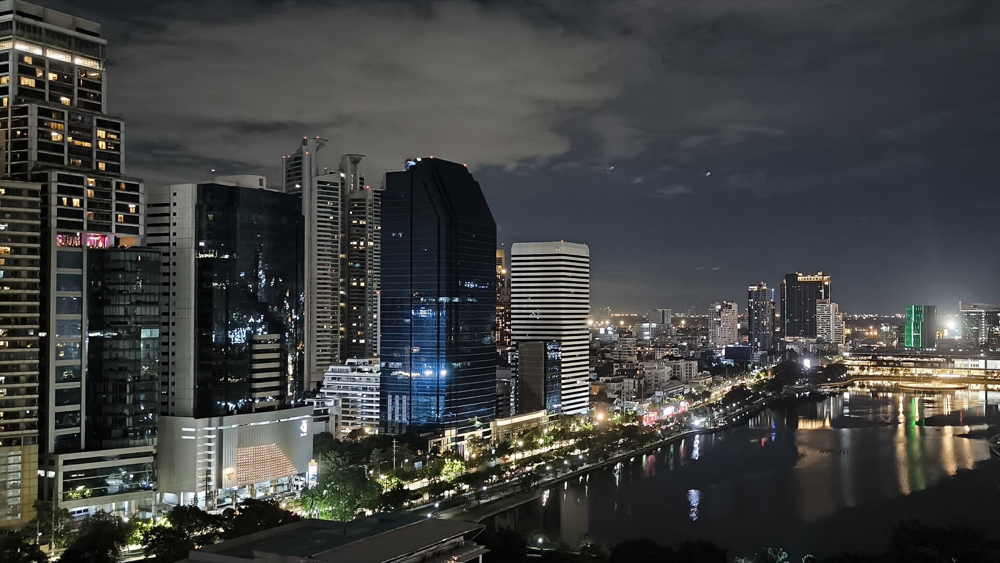

08:00
Factory Coffee 外帶
- 目的
- 泰國咖啡冠軍團隊的店，就在飯店旁邊。08:00 一開門就去，外帶一杯上車喝。
- 怎麼玩
- 點 Dirty 或 Es-Yen（泰式冰咖啡）都很穩。想吃早餐這裡也有可頌。
- 注意
- 08:00-16:00。今天只外帶，明天早上再坐下來喝。
9/25 週五
白天照她的排。重點是動物園之後：晚餐三選一，夜生活以 Tichuca 為主。

這天照她的 Safari World 排。你的白天不排定（下面留一個小框給你自己挑）。重點是動物園之後：我把她原本清單裡的 Tichuca 放到今晚，因為 Tichuca 週五開到 01:00，而且 Thonglor 就在從 Safari World 回市區的路上。
從曼谷東北郊回來，往 Thonglor 方向是順路的。也給一個不回市區的選項。
回市區主線 / 她原本排的 Tichuca 就在同一區
不回市區 / 農卓區的日式村落，晚上點燈更好看
輕鬆版 / 她逛一天會累
她原本清單裡的 Tichuca 放這晚。Thonglor 是曼谷最安全的夜生活區之一，走路互達。
她原本排的 / 46 樓發光大樹，曼谷最紅的 rooftop
免入場的 360 度夜景，比 Tichuca 安靜
老上海風燈籠夜店，跳舞
藏起來的調酒吧，用泰國香料調酒